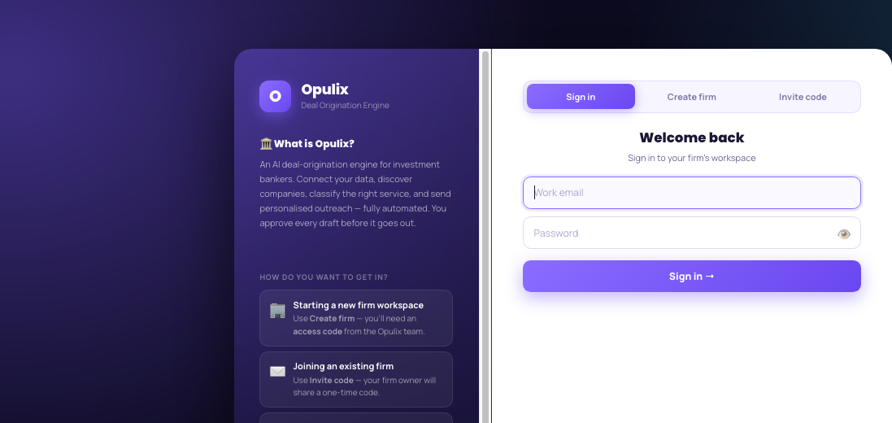
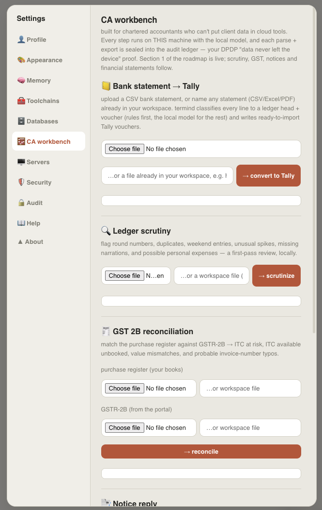

Building the infrastructure for autonomous AI agents.
AI engineer. Author of AION, an operating system for AI agents, and 126+ open-source tools spanning agentic infrastructure, RAG, security, and applied finance.
Manual work in. An AI system out.
Repetitive process, an internal tool nobody wants to maintain, a full agentic pipeline — if it can be automated with AI, we build it and ship it. Tell us what to build →
Not just a repo. A live product.
Opulix is our deal-origination platform for investment banking — built, deployed, and used today.
Opulix Deal Engine
AI-powered deal origination for investment bankers
Connect your data sources, discover companies, classify the right advisory service, and send personalized outreach — fully automated. Every draft is approved by a human before it goes out. Built for a real IB firm's deal-sourcing workflow, multi-tenant, in production.
- Tracxn + MCA data ingestion via MCP connectors
- Deterministic classification engine — tunable, not a black box
- Contact enrichment + Claude-drafted personalized outreach
- Multi-tenant firm workspaces, invite codes, human approval gate

Client data that never leaves the laptop.
termind ships a dedicated CA workbench for regulated financial data that legally can't touch the cloud.
termind — CA Workbench
Built for chartered accountants who can't put client data in cloud tools
Every step runs on this machine with the local model, and each parse and export is sealed into a tamper-evident audit ledger — the "data never left the device" proof a practice needs. Notice drafting and financial statements are next on the roadmap.
- Bank statement → Tally — classifies every line to a ledger head + voucher, writes ready-to-import Tally vouchers
- Ledger scrutiny — flags round numbers, duplicates, weekend entries, unusual spikes, and possible personal expenses
- GST 2B reconciliation — matches the purchase register against GSTR-2B, surfaces ITC at risk and probable invoice-number typos

Achievements
Flagship projects
Full case studies of the projects I'd walk you through in an interview.
The agentic AI lab
Beyond the flagship builds — twelve more agents and agent-adjacent tools, each solving one sharp problem: verification, routing, memory, incident triage, migration trust.
Everything above is built with
No single-vendor lock-in — the same fundamentals applied across agent infra, finance, and security.
126+ projects, by domain
Every category tested, documented, and shipped.
No projects match that search.
Real-time GitHub intelligence
Refreshed daily, straight from the API. Every number here traces back to a real field — nothing simulated.
Tell us what you
want to automate.
Open to agentic-AI roles, collaborations, and freelance work — reach out on LinkedIn, email, or fill in the form and we'll get back to you.